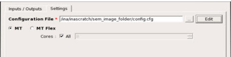
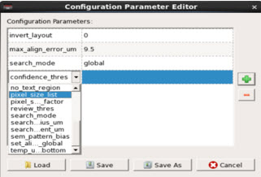
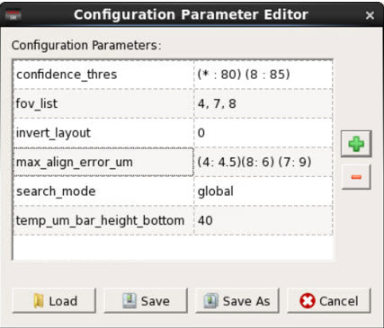

After specifying inputs and outputs for
the Image-to-Layout Alignment tool, specify configuration settings
for the run.
Procedure
- In the
Image to Layout Alignment dialog box, click the Settings tab.
Figure 1. Settings
Tab
- In the Settings tab,
specify values for the following fields:
- Configuration File
Specifies a text file (with a .cfg suffix)
containing run configuration parameters. The parameters are summarized
in the following table, with complete descriptions in “Image-to-Layout Alignment Run Configuration File”.
Table 1. Image-to-Layout
Alignment Configuration File ParametersParameter
|
Description
|
|---|
max_align_error_um
|
Specifies the maximum alignment error in microns.
|
search_radius_um
|
Specifies the search radius in microns.
|
search_step_increment_um
|
Specifies the increments used in the search radius
for each step.
|
search_mode
|
Specifies whether a local or global method
is to be used to search for the global shift radius.
|
min_defects_in_search:
|
Specifies the minimum number of defects
with a SEM that should be present to calculate the global offset
using local method. This is not required if search_mode is set to
global.
|
invert_layout
|
Specifies whether or not a layout image inversion
is required.
|
pixel_size_scale_factor
|
Specifies the resolution scale factor for
a layout and SEM image.
|
pixel_size_list
|
Specifies a comma-separated
list of various pixel sizes of defect images. The tool automatically determines
the most suitable pixel size for each defect image from values provided
in this list. This field has lower priority than fov_list.
|
fov_list
|
Specifies a comma-separated
list of FOV (Field of VIEW) values for defect images. The tool automatically
determines the most suitable FOV value for each defect from the
values provided in this list. This field has higher priority than pixel_size_list.
|
You can open or modify an existing configuration file by clicking
the Edit button. This opens the Configuration
Parameter Editor, as shown in the following figure:
Figure 2. Configuration
Parameter Editor
Click the green plus button to add a new parameter. This adds
a new row to the table. Double-clicking on the first column of the
new row populates a combo box with all available configuration parameters.
A default value is automatically assigned for that parameter that
you can then edit by clicking on the entry.
Click the red minus button to remove a parameter from the table.
To save any changes to the parameters, click Save or Save
As.
To load an existing configuration file, click Load.
Once a different configuration file is loaded, it becomes the current
default configuration file.
- Specifying FOV Parameters
You can specify values
for multiple FOV (Field of View)-dependent parameters for a defect
SEM image as well as the corresponding FOV in the run configuration
file. These parameters are displayed in the Configuration Parameter
Editor.
Figure 3. FOV Parameters in the Configuration Parameter Editor 
For example, if the fov_list contains the following
values:
fov1, fov2, fov3
you can specify values for all parameters affected
by each FOV value.
fov_dependent_param (fov1:paramVal1)(fov2:paramVal2)(fov3:paramVal3)
In this example, paramVal1 is applied to all defect
images with an FOV of fov1, paramVal2 is applied to defect images
with FOV of fov2, and so on. When one value applies to more than
one FOV (or a default value is to be specified) then an asterisk (*)
can be used in place of an FOV value. For example:
fov_dependent_param2 (fov1:paramVal1) (*:paramVal2)
In this example, paramVal1 applies to defect images
with an FOV of fov1, and paramVal2 applies to all the defects that
do not use fov1.
- MTflex (Distributed)
Specifies a remote host in .crp format.
The remote host file format is:
REMOTE HOST <hostname> <Number_of_cores> MGC_HOME <Calibre_install_path> DIR <remote_directory>
For example:
REMOTE HOST localhost 8 MGC_HOME /user/work_area/Mgc_home/
DIR /output_dir
- MT (Multithreaded)
By default, the tools are enabled to work in multithreaded mode.
You can specify the number of cores to utilize. Otherwise, the tool
starts running with all available cores of a system.
- Click Submit to
initiate an Image-to-Layout alignment run.
Results
A progress window appears, displaying a status log while the
tool runs. Refer to “Image-to-Layout Alignment Results Analysis” for a
description of the results. The results can be saved by selecting File > Save or File > Save
As. These results include all of the values under the
columns ShiftX, ShiftY, Confidence Metric, and Alignment Status.
In addition, all generated images and bin files are also saved.
The bin files are required to show contour information for aligned
SEM images.
The saved defect file can be reloaded in Calibre DefectClassify
for further analysis. When you load a saved file, the columns SystemX
and SystemY will show a layout shifted X- and Y-coordinates, respectively,
from the previously saved run. A rerun of the Image to Layout Alignment
tool overwrites any previously displayed data, either loaded from
the defect file or from previous runs.